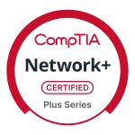

Résumé



Summary
IT Infrastructure Specialist with 8+ years of experience in IT and 3+ years of experience in enterprise environments. Expert at end-to-end technical support and infrastructure management. Deep expertise in LAN/WAN troubleshooting, Active Directory, and Microsoft 365 administration. CompTIA A+, Network+, and Security+ certified.
Professional Experience
Designer-Developer
Jan 2022–Present
Freelance
Alexandria, VA
- Designed and deployed custom, responsive web applications using HTML5, CSS3, and JS frameworks, ensuring cross- browser compatibility and mobile optimization
- Managed end-to-end project lifecycles, including wireframing in Figma, front-end development, and final deployment via GitHub and Netlify
- Collaborated with stakeholders to translate business requirements into technical specifications
SharePoint Administrator
May 2020–Dec 2021
(Contact for employer details)
Washington, D.C.
- Administered SharePoint Online/M365 environments for 500+ users, managing site collections, document libraries, and complex permission hierarchies
- Architected and implemented superior workflows to maximize uptime and reduce manual data entry burden
- Developed and administered data collection initiatives using InfoPath
- Interfaced with key stakeholders and government liasons as first point-of-contact for data team
Desktop Support Technician
May 2018–Dec 2019
(Contact for employer details)
Iowa City, IA
- Resolved technical support tickets via ServiceNow, maintaining exceptional user satisfaction rating
- Provisioned and imaged 200+ workstations using SCCM and MDT
- Performed hardware and software lifecycle upgrades, including RAM installations, OS migrations, and peripheral troubleshooting
Professional Certifications
CompTIA A+
February 2026
CompTIA Network+
March 2026
CompTIA Security+
April 2026
Core Technical Proficiencies
- Operating Systems: Windows Server (2016/2019/2022), Windows 10/11, Linux (Ubuntu, RHEL, Arch), macOS
- Cloud & Infrastructure: Azure (Entra ID/Active Directory), AWS (EC2, S3, VPC), GCP, Hybrid Cloud Architecture
- Networking & Security: TCP/IP, DNS/DHCP, VPN, Firewalls, VLANs, SSL/TLS, Endpoint Protection
- Virtualization & Storage: VMware vSphere/ESXi, Hyper-V, SAN/NAS Management, Backup & Disaster Recovery
- Identity & Access Management: Active Directory, Group Policy (GPO), Azure AD, MFA, SSO
- Automation & Orchestration: PowerShell, Bash, Python, YAML, TOML, Ansible
- Collaboration & Productivity: MS365 Administration (Exchange, SharePoint), Google Workspace, Slack, Zoom
Education
Franklin University
Columbus, OH
Associate of Science, Computer Science, Summa cum Laude
2023
Cumulative GPA 4.0/4.0 | Dean's List